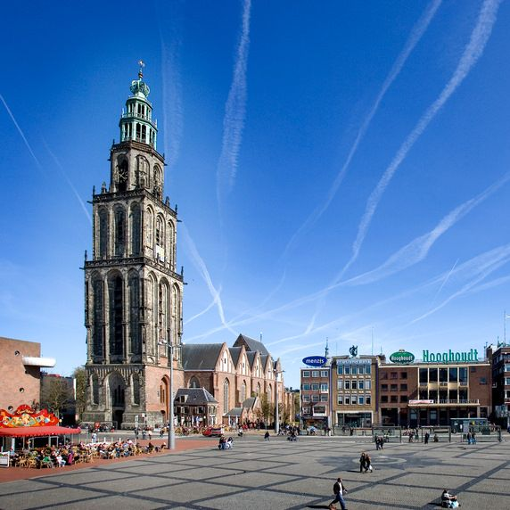

MartiniToren
De Martinitoren, gelegen aan de Grote Markt, is de bekendste en met zijn 96,8 meter ook de hoogste toren van de stad Groningen. De toren hoort bij de Martinikerk. Voor de stadjers, de inwoners van de stad, heeft de toren de bijnaam d' Olle Grieze, Gronings voor de oude grijze.
Geschiedenis
Eerste en tweede toren
De huidige Martinitoren had twee voorgangers. In de 13e eeuw werd de eerste toren gebouwd. Deze was ongeveer 30 meter hoog en geheel in romanogotische stijl. Op het 13e-eeuwse stadszegel van Groningen staat een afbeelding van de toren. Deze stond oorspronkelijk ten westen van de kerk, maar was door de verlenging van de noordelijke en zuidelijke zijbeuken van de Martinikerk naar het westen inpandig geworden. De toren had een piramidevormig tentdak en twee rondbogige galmgaten. Door een blikseminslag in 1408 werd deze toren vernietigd. Vanaf 1430 werd de kerk uitgebreid in gotische stijl, waarbij in 1452 ook begonnen werd aan de bouw van een tweede toren van ongeveer 45 meter hoog, die deels van steen en deels van hout was. De kerkmuren werden in 1461 tegen de toren opgetrokken. Op de dinsdag na Pasen in 1465 woedde een grote brand in de toren als gevolg van een 'groet donder ende blyxem', aldus de kroniek van Sicke Benninghe. Mogelijk als gevolg hiervan stortte in 1468 de toren in en daarmee ook alle aanbouwen rondom.
Bouw van de derde toren
Na de instorting werden plannen voor een nieuwe toren gemaakt. Besloten werd om de toren niet weer inpandig te maken, maar aan westzijde van de kerk te herbouwen. De toren werd gebouwd uit blokken Bentheimer zandsteen en de bovenbouw en spits van hout. Naar verluidt heeft de toren een fundering van drie meter diep. In 1469 startte de bouw van deze toren die de groeiende macht van de stad Groningen in de Ommelanden moest uitstralen. Geopperd is wel dat de toren een kopie moest vormen van de Domtoren om de (grens van de) macht van het Bisdom Utrecht te benadrukken, maar Groningen had zich daar toen al grotendeels los van gemaakt. Wel kan het als een afspiegeling van deze toren worden gezien. Hoelang de bouw van deze toren duurde is onbekend. Omdat Ubbo Emmius in zijn werk uit 1599 bij het jaar 1482 spreekt over een 'geweldige torenbouw die in de stad ver uitsteekt boven de Maartenskerk', wordt wel gesteld dat de toren toen al voltooid moet zijn. Dit lijkt echter een onmogelijk snelle periode, daar de bouw van de Domtoren bijvoorbeeld ruim 60 jaar duurde en er bovendien stadsrekeningen uit de 16e eeuw bestaan die met de bouw van de toren te maken hebben. Van der Werff acht het mogelijk dat men toen echter al wel gevorderd was tot de tweede trans, hetgeen hij ook al een flinke prestatie acht voor die tijd. Een ander jaar dat wordt genoemd is 1548. Dit jaar wordt genoemd in de levensbeschrijving van de 16e-eeuwse burgemeester Willem Wicheringe, die zou zijn geboren bij de eerstesteenlegging in 1469 en zou zijn gestorven in 1548, toen de weerhaan zou zijn geplaatst. De torenbouw zou dan 79 jaar hebben geduurd. Volgens kroniekschrijver Johan Rengers van Ten Post werd de toren voltooid in 1553 (84 jaar) en volgens kroniekschrijver Abel Eppens (tho Equart) was de bouw in 1545 (het jaar dat een licht aangeschoten torenwachter van de toren viel en overleed) nog niet gevorderd tot de derde trans en werd de toren in 1554 voltooid (85 jaar).
Brand en herstel
Door het (buiten het weten van de stadsmagistraten om) ontsteken van brandende pektonnen op de derde trans, uit vreugde na het vertrek van de Spaanse en met name de gehate Waalse troepen in 1577 (in het kader van de Pacificatie van Gent), vatte het bouwwerk vlam en stortte de toren gedeeltelijk in. Volgens Abel Eppens stortten daarbij de 17 beiaardklokken met donderend geraas naar beneden. Er bleef een hoogte van 69 meter bewaard. De geschonden toren staat afgebeeld op een kaart van de stad Groningen van Nicolaes van Geelkercken uit 1616. Er was al direct in 1577 besloten tot herstel, maar door de woelingen van de Tachtigjarige Oorlog duurde het nog tot 1627 alvorens de toren kon worden hersteld. De nieuwe toren kreeg een hoogte van 96,8 meter. Het grondvlak ligt op 6,80 m boven NAP. De eerste en tweede trans reiken samen tot 40 meter, de derde tot 55 meter en de vierde tot 68 meter. Daarboven werd een opengewerkte kroon geplaatst met kruis en windvaan. Vermoedelijk werd deze verbouwing tot de huidige uitstraling overzien door de Groningse stadsbouwmeester Garwer Peters. Van der Werff acht de hierboven vermelde reconstructie van Ter Kuile de meest waarschijnlijke en vermoedt dan ook dat de nieuwe torenbekroning geïnspireerd geweest is op die van de oude toren zoals gedacht door Ter Kuile.[1] De bekroning van de toren lijkt te zijn geïnspireerd op de 17e-eeuwse Hollandse bouwkunst, zoals ook veel werd toegepast in Amsterdam en Haarlem.
Latere geschiedenis
Later is de toren nog meerdere malen beschadigd geraakt door natuurgeweld en diverse oorlogen. De torenspits is nog eens door blikseminslag getroffen in onder meer 1822. Uit dat jaar dateert ook de windvaan op de toren in de vorm van een paard. Sinds 1838 heeft de toren een bliksemafleider. In 1888 werd tijdens een discussie over de (zoveelste) restauratie van de toren tijdens een gemeenteraadsvergadering gediscussieerd over het herstellen of slopen van de Martinitoren, maar werd toch besloten tot restauratie.
In de jaren 1930 was de staat van de toren echter alweer zo slecht dat deze op instorten stond. In 1938, nadat ernstige scheuren waren ontdekt die de toren in gevaar brachten, werd een plint van gewapend beton om de toren gelegd. Ook de drie hoge doorgangen onder de toren werden toen grotendeels dichtgezet ter versteviging van de constructie. Boven de ingang aan de westzijde zijn vervolgens drie beelden van Willem Valk aangebracht. Zij stellen personen voor die verbonden zijn met de geschiedenis van Groningen: de blinde Bernlef, Sint Martinus en Rudolf Agricola.
De toren overleefde de Tweede Wereldoorlog redelijk ongeschonden. In een van de klokken is nog altijd een kogelgat te zien, ontstaan bij de bevrijding van Groningen aan het einde van de Tweede Wereldoorlog. Ook enkele beschadigingen in het muurvlak zijn niet ongedaan gemaakt.
Nadat er kort achter elkaar drie mensen waren omgekomen door een val vanaf de toren is begin 21e eeuw gezocht naar mogelijkheden om de veiligheid van de toren te vergroten om hiermee de kans op ongelukken en zelfdodingen te verkleinen. De doorgangen onder de toren werden reeds in 2001 met hekwerken afgesloten. Vervolgens werd ook een hekwerk geplaatst op de eerste torenomgang (trans). De andere transen zijn definitief afgesloten voor publiek.
De Martinitoren is sinds 1798 (volledige scheiding van kerk en staat) eigendom van de burgerlijke gemeente. De toren had destijds al de functie van uitkijktoren (onder meer alarmering bij brand). De laatste torenwachter/brandwacht heeft dienstgedaan tot 1921.
De luidklokken
In de Martinitoren hangt een gelui bestaande uit twaalf klokken, het grootste in Nederland na dat van de Domtoren in Utrecht.
Drie grote klokken zijn in 1577 en 1578 gegoten door Hendrick van Trier. De grootste, met een gewicht van 7850 kilo en een diameter van 2,23 meter, wordt de Salvator genoemd, Latijn voor 'Verlosser'. De andere twee, de grote en de kleine Borgerklok ('burgerklok'), wegen respectievelijk 4200 en 3400 kilo.
Eeuwenlang hebben deze klokken vreugde en leed, oorlog en vrede aangekondigd. Na een malaria-epidemie in 1826 (Groninger ziekte) werd het dagelijks luiden van de klokken afgeschaft. Sinds 1982 luidt het Groninger Klokkenluidersgilde iedere zondag en op bijzondere dagen met de hand de klokken.
In 1994 werd een nieuwe klok geïnstalleerd, de Kromstaart, genoemd naar een zilveren munt die in Groningen in gebruik was van de veertiende tot de achttiende eeuw. Deze op een na grootste klok weegt 5550 kilo en heeft een doorsnede van ongeveer twee meter.
De beiaard
De beiaard van de Martinitoren is in 1662/63 gegoten door de befaamde klokkengieters Pieter en François Hemony en besloeg oorspronkelijk drie octaven (32 klokken). Bij een restauratie en uitbreiding in 1984 voegde men vijf discantklokjes en twee grote klokken toe die ook de uur- en halfuurslag doen klinken, alle gegoten door de Koninklijke Klokkengieterij Eijsbouts in Asten. Thans omvat de beiaard vier octaven en 49 klokken, waarvan er nog dertig van de gebroeders Hemony zijn.